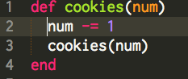
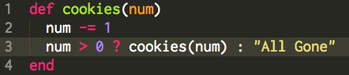

Tech: Recursion
Sunday, September 28, 2014
I find recursion to be a really cool topic. I am not sure what about it fascinates me so, but I can't help but get excited about it. At it's most base level, recursion is repeating the same task over and over. With respect to computer science, it is more about repeating the same operation with a new and updated value.
I remember the day of my DBC interview I was reading up on some different topics and read about recursion specifically. Luckily, one of the questions was an example of recursion in Ruby. The example was this (or at least similar to this):

I was given a method declaration like this., and asked to explain what was going on. After going on about it being a method declaration in Ruby where the method #cookies takes a parameter num, I explained that it was recursive. This method is recursive because it calls itself within itself.
Now, this is not exactly a pretty example of recursion because it is infinitely recursive. There is no check to exit the continuous call to #cookies from within #cookies, so, it goes on indefinitely.
This was part of the problem I was given, I had to fix this infinitely recursive method. To do so, there has to be some sort of control statement to help keep us from having an infinitely recursive method. To fix this, I put in a simple if statement that would check for the number of cookies. After all, you can not eat more cookies than you start with, so I had this statement check to see if cookies was >= 0.

This shorthand if statement checks to see if the number of cookies is still greater than 0. Now, when we call our recursive method, we will continue to take cookies out of our "jar" until they are all gone.
Now, to test and see if you learned anything about recursion from this explanation, google "recursion" and see if you get the google engineers' joke.